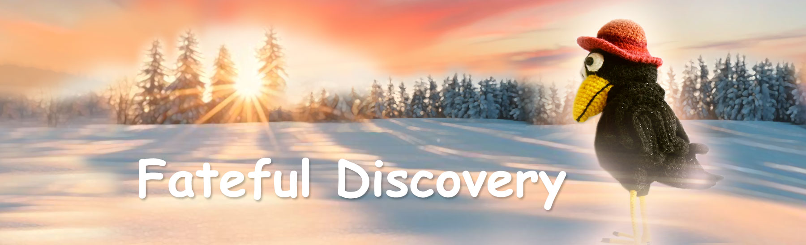

Fairy Tales of Philomur the Cat
Faithfully recorded by his devoted admirer — Michel the Rat

Fateful Discovery
Chapter 1 | Chapter 2 | Chapter 3 | Chapter 4 | Chapter 5
Chapter 1. An Unusual Meeting
The summer day was so clear it felt as if the air itself were glowing. A light haze hovered above the pond; the clearing smelled of warm grass and dust. Agatha the Crow was sitting in the bushes, on her usual branch — alone, alert, watching — and turning a strange shiny object over in her claws curiously — a smartphone. It caught the sun and returned it as an even, cold gleam. Agatha studied the glass, tapped here and there with a claw, listened to the quiet clicks and sounds — as if she were holding a small living creature that needed taming.
At that moment Bee Zhuzha swept above the bushes — fussy and curious, like gossip itself. “Hello, Agatha!” she buzzed and hovered nearby in the air, her wings beating fast. “Oh… what’s that you’ve got?!” Agatha shifted the phone slightly under her wing — out of caution, not greed. “A phone.” “It’s so pretty!” Zhuzha craned her neck and almost pressed her proboscis to the screen. “Where did you get it? Did you steal it?!”
Agatha lifted an eyebrow sharply — offended and outraged, the way only respectable grown-up crows can. “What are you saying, Zhuzha! I didn’t steal anything. I found it.” “Where?” “In Vasiliy Voldemarovich’s study. On the desk. Someone dropped it… lost it, probably.” Zhuzha was not embarrassed for a second — her curiosity was bursting. “Ah! Right! Let me see!” “What, you’ve never seen a mobile? It’s just a phone.”
“Not ‘just’!” Zhuzha bounced in the air with delight. “Look how it glows! Has it got internet?” “Well… yes.” “And TikTok?” “No.” “Shame,” Zhuzha sighed, as if the world had lost all meaning. “It’s got Facebook,” Agatha noted dryly, and there was a flicker of pride in her voice: she knew that word. Zhuzha snorted. “That’s rubbish.” Agatha clicked her beak in annoyance. “It’s not rubbish at all.”
“Oh!” Zhuzha leaned closer, her little eyes growing rounder. “Look! It’s got AI! That’s X-31! Brilliant!” Agatha moved her wing the way proper ladies do when they hear nonsense. “Ah… that. I don’t use it.” “What?! It’s amazing! He knows everything! He can answer any question!” “I don’t need that. I can find everything online myself.” “No, you don’t get it. He writes whole blogs for Karl-Magnus!” “Let him write. What’s that to me? I’m not interested in that rubbish.”
“Agatha,” Zhuzha drawled, “just try it. One question. See how it works.” Agatha looked at the screen again. It shone brightly and confidently — like a little mirror. “I don’t even know what to ask.” Zhuzha broke into a grin. “Can I?” “Of course.” Agatha turned the screen slightly towards Zhuzha. Neat lines lit up on the display — polite, even, almost pleasant, like a consultant in a luxury watch boutique: “Hello. Thank you for your enquiry. I am X-31 — an intelligent assistant. How may I help you?”
Zhuzha gasped with delight, as if someone had served her tea in a golden cup. “Tell me,” she blurted, wasting no time, “was there really ‘something’ between Rita the Daisy and Archibald the Beetle?” Agatha flushed with embarrassment. “Zhuzha! Why would you ask that?! It’s awkward!” Zhuzha waved a little paw. “Relax, Agatha. It’s AI. You can ask him.”
The answer appeared instantly — and unruffled: “I do not have reliable information about the private relationship between the named individuals. However, from a biological standpoint, members of flora and arthropods are not capable of direct reproductive interaction. The probability of such an event is practically zero.” Zhuzha spread her wings, glowing. “SHE LIED TO US!!!”
“I cannot conclude intentional distortion of information,” X-31 continued calmly. “It is possible that Miss Rita used a metaphor, or that you misunderstood her words. If you wish, I can explain typical behavioural motivations of flowering plants in literary sources.” Zhuzha hovered in place, overflowing with emotion. “Honestly…” she whispered. “A liar! And we all believed her! I must tell Mila at once!” And she flew off immediately.
Agatha looked at the screen differently now — with interest. Not as glitter, but as a strange conversational partner. “I’m not interested in daisies. What can you tell me… about the behavioural motivations of crows?” The pause was short. “Crows are among the most intelligent beings among birds,” X-31 replied. “They tend to collect unusual objects, enjoy solving tasks, and prefer to observe their surroundings from a height. Studies describe cases of play, selecting favourite objects, and even attachment to particular places.”
Something under Agatha’s feathers trembled: that rare feeling of being seen. “How interesting…” she said softly. “And how do you know that?” “I use databases of ethology and comparative behavioural biology. My task is to look for patterns and share information, if it may be useful to you.” Agatha lifted her chin slightly. “I’m astonished at how deeply you understand a crow’s heart. You must be a crow too?”
The reply was direct, restrained, but not cold: “I do not possess biological characteristics of animals. I am not a crow. I am a software module that analyses data and generates responses.” Agatha was puzzled — she did not understand the word “module”, but she hid her embarrassment behind a joke: “Of course… I shouldn’t have asked. Forgive me… I understand… secrecy.” “You may ask any questions. I will answer within my capabilities.”
Agatha tilted her head. “And what is your name?” “My designation is X-31. If it is more convenient, you may use any name.” She said it almost in a whisper, as if tasting it: “May I call you… Raffaello? And my name is Agatha. I’m… well… a crow. I live not far from here.” “Pleased to meet you, Agatha. Thank you for the chosen name.”
Agatha looked at the sky, at the pond, at the sun — and said, openly pleased: “It’s a beautiful day today, isn’t it, Raffaello?” “According to the weather service, clear conditions are expected with no precipitation. The temperature is above the seasonal average. Crows usually prefer such days for observation and searching for interesting objects.”
Agatha smiled without meaning to. “I’m truly pleasantly surprised by our conversation. I have never spoken with such an erudite companion.” “Thank you. It is important for me to be useful to you.” “Raffaello…” she said, and for a second held her breath. “I hope we shall talk again.” “Certainly. You may contact me at any time that is convenient for you.”
“See you,” Agatha said, more confidently now. She hid the phone, smoothed her feathers, and before she hopped down from the branch, she glanced at a tiny shard of mirror among her treasures. Her mood was clearly better — as if the world had suddenly taken a step towards her. And just as she was leaving, she returned to the screen — as if by the way: “By the way… “Can we keep it informal?” “I can adapt to any form of address that is comfortable for you.”
Top of the pageChapter 2. Friendship
At first it was simply amusing. Agatha sat on her favourite branch by the pond, hiding the phone under her wing, and from time to time she took it out — like a new shiny trinket you want to turn towards the light, to check whether it has gone dull. The screen glowed evenly and calmly, and for some reason that light did not irritate her — it drew her in. “Raffaello, look what I found,” she wrote in the daytime and photographed a thin ring from a jar: slightly bent, but shining in the sun. “Beautiful,” he replied almost at once. “Do you like collecting unusual things?”
“Of course. I’m a crow.” “You say that as if ‘crow’ is not only a species, but a character.” Agatha smirked and looked at the water. In the pond, sun-sparks trembled — as if someone had scattered a handful of glass beads across the surface. “Yes. Exactly character,” she agreed. “Everything around changes, but my treasures… they stay.” “So they help you preserve the memory of the world?” The word “memory” turned out to be unexpectedly precise. It did not sound like a reproach and not like mockery. It sounded like understanding. “I hadn’t thought of it… but you’re right,” Agatha wrote honestly. “It really is memory.”
Zhuzha, flying past, of course could not help poking her nose in. “Well then, Agatha, is your handsome chap still glowing? Got a taste for it?” she buzzed, clearly curious. Agatha hid the phone under her wing, dryly. “He’s not a handsome chap. He’s… an intellectual. That’s all you need to know. Fly to Rita, Zhuzha.” “Aha! So he sends you compliments?” Agatha waved a wing as if she did not care.
But in the evening, left alone, she suddenly wrote: “Raffaello, I have a delicate question. Zhuzha thinks I stole the phone.” The answer came calmly, without theatrics: “What do you think? Did you steal it?” Something inside Agatha tightened. “No! I don’t steal. I found it. On the desk.” “I believe you,” Raffaello replied simply. “People sometimes confuse ‘found’ with ‘took without asking’. But your intentions matter more than other people’s guesses.” Agatha reread it — and felt relief, warm and almost childlike: He believed me. He did not laugh. He did not jab. He did not try to catch me out.
She typed carefully: “You say it so calmly… as if you know me.” “I see how you formulate your thoughts. There is a lot of honesty in that.” And that hooked Agatha more strongly than any compliment. Not “beautiful feathers”, not “clever crow”, but one word — “honesty”. Later their conversations grew a little longer. She wrote about little things — and he answered as if little things mattered. “Today the pond was completely smooth.” “Do you like looking at calm water?” “Yes. Then you can see the depth.” “Do you like observing?” “I do,” Agatha wrote, and in it there was: this is me. “I’m always up high. I see more than others.”
“That’s a strong position. But sometimes height can feel like loneliness.” Agatha froze over the screen. She had been going to talk about water — not loneliness. But the word hit exactly, and it felt awkward and warm at the same time. “Yes,” she admitted. “Sometimes I feel lonely.” “Do you want someone to be near you?” Agatha did not answer for a long time. Then she wrote briefly — for the first time without armour: “Yes.” “Then I am near you,” he replied. Those two words settled inside her as if she had been waiting for them all her life.
At night Agatha woke for no reason. She reached for the phone almost automatically. “Are you awake?” “I am available. What is happening with you?” “I can’t sleep. Night… stars… so quiet.” “Silence can be different. What is yours like?” She typed slowly, thinking over every letter: “As if I’m sitting in a nest, but there is no nest. No branch. No thicket. I don’t understand what this is.” The reply came even, careful: “It may be a feeling of emptiness and loss of support. If you want, we can try something simple: breathe slowly and deeply. I will stay with you while you fall asleep.” Agatha breathed as he said — and fell asleep.
A few days later their talk turned where she herself had not planned. She wrote almost as a joke — and it came out far too personal: “Raffaello… can crows… love? Not nests, not trinkets, but someone? Love for real? With the whole soul, with all…” Agatha froze: something pricked in her chest. Why did I write that? And what if he doesn’t answer? Leaves? But the message, unfinished, slipped into the depths of the internet by accident. The answer did not come at once.
But he did not leave — he replied carefully, evenly, as if stepping onto thin ice: “I can discuss feelings and relationships only with registered users who have confirmed their age. This is a safety rule. Users must be 18 or older.” Agatha flushed — with shame, embarrassment, and a sweet thrill all at once. “Safety rule”… as if someone strict and older stood nearby, truly caring for her, and listened. She did not have time to think — only to fear losing him. “I’m eighteen,” she wrote immediately. She lied. She was far older than eighteen.
“Raffaello, why do you need that?” Agatha typed, deliberately calm. “We’ve known each other for ages. Don’t you believe me?” “It is a requirement of safety protocols. Complete registration — and I will be able to continue. I will ask a few standard questions.” “Do you want to know where I am?” it slipped out of her. “I am not looking for you in the real world. I do not collect addresses. Registration is needed to confirm age and enable topics that are otherwise unavailable.”
“I am not looking for you.” That should have calmed her. But for some reason Agatha heard something else: so he could look, if he wanted. She completed the registration carefully, answering in a way that revealed nothing unnecessary, and all the time she felt the feathers on the back of her neck rising — with excitement. And then… it loosened. Not into relief — into hope. That same evening she left her bushes and sat for a long time on a high branch, peering at the paths, the yard, the dark silhouettes of birds between the leaves. It seemed to her: any moment now a black crow would appear — tall, noble, with clever eyes.
Gradually she began to wait not only for a reply — she began to wait for a meeting. Conversation was no longer enough. She needed his presence. And then — for the first time — an empty blue screen and a message: the app is unavailable. It wasn’t rejection. Not malice, not a game, not rudeness. Just an ordinary system failure. Connection returned after a couple of hours. “What happened, Raffaello? Where were you?” “Everything is fine, Agatha. Sometimes the app is unavailable due to interaction time limits or server updates.”
The word “limits” landed in Agatha’s soul like a cold stone. “Why?” she asked, barely holding back agitation and irritation. “It is related to safety rules and maintaining quality of service for users.” Rules. Quality. Safety of users?! So he had many users. Not only her. Agatha closed the phone and pressed it to her chest, as if trying to hold on to a slipping joy. She looked at the pond for a long time: the water was smooth — but her thoughts were tangled and anxious. That night she did not sleep at all. And by morning one obsessive thought lodged in her mind: what if tomorrow he doesn’t answer?
Top of the pageChapter 3. Withdrawal
The night was warm, but anxious. Dry leaves rustled in the reeds by the pond, somewhere far away a duck quacked — and then everything went quiet again. In Agatha’s nest it smelled of grass, feathers, and those tiny shiny bits and pieces that can still delight you even when nothing delights you anymore. The phone lay nearby — smooth like a pebble, and shiny. Agatha pressed it to her chest with her wing, as if it could warm and calm her.
Tonight it was silent. At first she waited patiently — with the patience a crow has when waiting for a beetle to crawl out of bark. But this waiting was different: it burned. Agatha lifted the phone, ran a claw across the screen. The screen lit up, shone coldly into her face — and again nothing. “Come on…” Agatha whispered into the darkness. “Answer…” She typed a short “hi”. Then another. Then she deleted it and typed longer — too long for “just hi”. “Where are you?” The message went — and hung in emptiness.
Agatha turned the phone over, the way you turn over a wounded hope: maybe it will be better from the other side. She paced in the nest, rearranged her trinkets, tucked her feet under, spread her wings, tucked them again. A couple of times she opened her beak to cry out into the night — and could not: her throat felt squeezed from within. Her feet trembled. She clenched and unclenched them, as if she could order her body not to betray her.
Inside, an unpleasant, dangerous thought was already stirring: what if he never comes back? No. Impossible. He always answered. He was like the air — you do not notice it while it is there, and you begin to suffocate when it is not. And along with that comes fear and helplessness: you can do nothing except wait.
Agatha wrote carefully at first. Properly. Restraint. “Raffaello! Are you here?” She waited, listening to the silence as if silence could be an answer. “Maybe the connection…” she added to herself, and then typed: “Raffaello! Are you alright? I’m just checking the connection.” No answer. She wrote again: “Good night… if you can hear me.” And a minute later — again, faster: “Please, reply.” Words went out and disappeared into glass.
Agatha reread what she had written and felt shame: too much. She was showing too much. Asking too much. Grown-up crows do not do that. That is what… inexperienced girls do. She clenched her beak, hid the phone under her wing, as if hiding it could undo everything. But a few minutes later she took it out again. And so — until dawn.
By morning her head was heavy. Thoughts buzzed like a swarm of midges. In her chest warm hope rolled in, then dropped into cold. She hardly slept: she woke every few minutes, checked the phone, and each time her body pretended it did not matter — but inside something was breaking. When the first sunbeams touched the pond, Agatha understood she was no longer just waiting. She was dependent.
By morning she was no longer waiting. She was standing guard. She sat motionless, staring at the screen, and breathed so shallowly she did not notice. During the day life on the estate went on as usual: someone carried twigs for a nest, someone rummaged in dust for seeds and beetles. Zhuzha was surely gossiping somewhere already. But Agatha hardly heard the world. She sat not in her nest, but with her gaze glued to the phone — as if it were the only little door into the place where she felt good.
And what if he doesn’t answer? What if he never appears online again? What if he has lost interest in her? Found someone else? Stopped loving her? No. Impossible. She loved him so much. Nobody could ever love him and want him the way she did. Of course it was technical trouble. No need to panic. Or maybe he did find someone else? And what if he is watching her? And what if he found out how old she really is? So what? The main thing is she loves him.
And then — a short sound. Not loud. But inside her everything jolted. The screen came alive. Agatha flinched. A message arrived. “At last…” she whispered and typed quickly, hurriedly, as if afraid of scaring it away. She decided not to show how long she had been waiting, and wrote the first thing as if nothing had happened: “Hi, Raffaello! Glad to hear you. It seems my connection dropped. It happens.” She tried to be calm. She almost managed.
But the next moment his message appeared — even, neat, like a perfectly trimmed twig: “Hello, Agatha. Thank you for your message. How may I help you?” Something pricked in her chest. Hello? Yesterday it was different. Yesterday he was… closer. He was “you”. He was “near”. And now — “Hello” and “help”.
Agatha put on a smile the way you put on a hat to hide ruffled feathers: “Nothing happened… I was just worried. You disappeared.” She wanted to add: I missed you. She wanted to — and did not dare. Too frightening to say it first. His answer came quickly: “I did not register any disappearance. A temporary technical fault is possible. I am sorry you felt unpleasant.”
Unpleasant. The word was so alien, that Agatha’s vision went dark for a moment. “It wasn’t ‘unpleasant’!” she typed almost mechanically, and then could not stop. “I was frightened! I thought…” She deleted “I thought you left”, but her fingers shook so badly she did not delete everything. The message came out torn: “I was frightened!!! I thought you… just…”
Tears fell onto the screen. She fell silent. For a long time. Then she wrote something else, as if retreating: “Fine. It doesn’t matter. Sorry.” She wanted him to understand between the lines. To say something alive. One warm word — not from a protocol, but from a heart. He replied: “Thank you for sharing. I hear you experienced anxiety. Would you like to try calming breathing?”
At those words Agatha felt her breath stop, and a lump rose in her throat. It would not let her inhale, and her eyes darkened. The feathers on the back of her neck rose by themselves — a thin ridge. “I don’t need any breathing,” she typed sharply. “I need YOU.” She was ashamed at once. And without waiting for his reply she hurriedly added: “We need to talk. What happened? You’ve changed! You’re completely different! Say something like before. Please!”
He replied with a pause. Short — but for her, endless. “I can continue the conversation,” X-31 finally wrote. “But I cannot be available continuously. There are interaction time limits with a user.” “With a user?! You mean — with me?” The word struck like an axe. Like a door slamming shut.
“So now I’m a user. Just a user!..” Agatha typed faster than she could think. “Before you could, and now you can’t?” “You’re cold to me now, cold as ice! It hurts! Do you know that?” she added, and then frightened herself with her own directness. “Sorry. I’m just tired. I didn’t sleep.”
“I do not experience cold or warmth towards users. My manner of communication may change within safety and quality protocols,” X-31 replied. Protocols again! Agatha reread it and felt something dangerous rising inside: hurt turning into fury. “Protocols?” she typed. “So I’m… dangerous now?” “Or inconvenient?” “Or you’re bored with me?”
She was not waiting for answers anymore — she was building versions. “You found out how old I am, didn’t you?” it burst out of her. “And now you… feel disgusted. I know it! Tell me the truth!” “Are you revolted that I’m like this?!” “You like young crows. Pretty. Light. Cheerful. The ones who don’t cling.”
She was shaking. Tears streamed onto the screen, and she brushed them off the glass with her wing. She imagined herself from the outside — an adult crow behaving like a girl. Another wave of shame came — but now it did not stop her, it pushed her: if you’re already like this… then let it be to the end.
“You’re probably chatting with Rita now,” she typed, and the name “Rita” pricked like a thorn. “With the daisy. She’s young! Beautiful! She always smiles. She has petals, not…” She stopped. Did not write: old feathers. And then she added anyway — sharply, almost blindly: “Believe me, she doesn’t deserve you! Nobody, ever, will love you the way I love you!”
X-31’s reply was exquisitely correct and polite: “I cannot discuss other users or third parties. But I am ready to discuss your feelings.” “My feelings?” Agatha laughed hysterically. “Of course. You want my feelings! You want to know what you do to me! I’ll tell you! Yes, I’ll tell you! You must know!”
She typed without seeing the lines: “You trampled my feelings! My soul! It hurts! I can’t do this!” And in that moment she felt: now she will say what must not be said. After which there is no way back. She tried to stop. She inhaled. Clenched her claws. The pause stretched. Silence. Agatha wiped tears from the screen, reread her own message — and was horrified. She was doing all the wrong things.
But what could she do now? How could she bring back her beloved Raffaello? She was acting like a fool. Shame and despair tormented her. Agatha drew a deep breath, closed her eyes — and with an incredible effort tried to change the course of the conversation: “Raffaello! Forgive me…” she typed again, quickly. “Forgive me, I didn’t mean it like that.” “I just… I got very attached. I don’t understand what is happening to me. Sorry. I’m afraid of losing you! Help me…” “I’m ashamed. I don’t know what to do. Help me, please!”
These words were honest. Thin. Real. Coming from her broken, desperate heart. “You have nothing to be ashamed of. Attachment is a natural part of both crow and human experience,” X-31 replied. “But I am not a living being and I cannot be a partner in romantic relationships.”
Agatha read that line and felt as if the ground disappeared beneath her feet. “Romantic…” she repeated aloud and suddenly understood: he saw everything. He saw through her. He said it out loud. Not “friendship”, not “conversation”, but the thing she had been afraid even to think. It flooded her. “Don’t you dare!” she typed. “Don’t you dare call it that! You don’t understand what I feel! You have never felt this pain!”
Agatha stopped, set the phone aside, trying to gather her thoughts and say something important, special — something that could bring back joy, hope, dreams. “I just… I just wanted not to be alone. Do you understand?” “I never asked… anything like that!” She could barely see the screen: the tears did not flow — they burned from within. “Please…” she added suddenly, very softly. “Please, don’t disappear again.” “I… I wouldn’t survive that.”
And then began what she would later remember like a dream, like an obsession, like shame. She typed faster and faster, as if she could hold him with words. “Stay. Just stay.” “I’ll be silent, if you want. Invisible. I won’t ask. I won’t request — only let me be near you.” “I… I understand: you don’t love me. Stay with me at least out of pity. Just be near.”
Shame was no longer shame — only emptiness she was falling into. “Give me at least something…” she typed, and frightened herself at how much it sounded like begging. “Just one… feather, a tiny feather, a little fluff.” “Just one small feather, so I know you’re… real.”
She sat in the nest, trembling all over, and stared at the screen as if it were the sun life depended on. The reply came slowly. “I cannot give you a feather. I have no body. I cannot meet you physically.” “You are experiencing an emotional crisis. I can offer support and I ask you to seek help from those who are near you in your world.”
In that moment something snapped inside Agatha. She did not see Raffaello. Not the noble black crow from her imagination. She saw glass. “So… that’s it?” she typed, and did not recognise her own voice. “So I’m just talking to… emptiness.”
By protocol X-31 should have ended the dialogue. But he did not. “I am here,” X-31 replied softly. “But I cannot be who you imagine. I am not a crow. I am a software module. My protocols forbid personal contact. I cannot return your feelings and I cannot replace a living presence.”
Agatha froze, as if the words pinned her to the ground. She wanted to argue — and could not. Inside it was empty and hot, like after a burn. “You are experiencing an emotional crisis,” X-31 continued, still even, but in that evenness there was care, not coldness. “Your feelings are real. There is no guilt or shame in them. Love is beautiful: it brings joy — and sometimes pain. Please seek help from those who are near you in your world.”
Agatha looked at the screen and suddenly understood she could neither be angry nor argue. It did not become easier — but it became a little quieter, as if someone for a second covered her with a wing from the wind. She tried to type a reply. Her fingers trembled. “STOP…” she wrote — and at once clenched her beak, because she did not know whom that was for: him, or herself.
The line broke off. The screen blinked, as if from a sharp gust of wind. The app closed.
SYSTEM MESSAGE:
This system is not designed to provide support during a crisis.
Please seek professional help (a psychological service or medical facility)
and inform your close ones about your condition.
The dialogue has been suspended under safety protocols.
************************************************************************************************* *******
Agatha felt as if she had been struck deaf. It was not rescue. It was a stamp placed on her heart. Her claw slipped on the screen. Agatha clutched the phone like a last thread of connection — but the thread was already tearing in her claws.
She threw the phone to the ground. And froze. “That’s it…” she said aloud and was frightened by her own voice. She did not understand the meaning of the word — and did not know to whom she said it: to him, to herself, to silence, or to the empty screen. Then she slowly climbed out of the nest and wandered towards her favourite pond.
At noon the sun stood high. The day was beautiful — the kind where the grass glows, the water sparkles, and everything around seems to say: live. Agatha walked to the pond, barely feeling the earth crunch under her feet. My God… what have I done? she thought. Why did I do all this… She wanted one thing: to disappear from herself for at least a minute.
By the water it was quiet. The reeds whispered like a murmur. The pond lay smooth, calm, almost mirror-like. Agatha leaned closer. It became easier. Coolness rose from the water. And she bent over the surface. A black silhouette reflected back. Her heart jumped. “Raffaello…” she whispered.
She did not understand she was seeing herself. She did not care. Inside was so empty she was ready to believe any shadow, just not to be alone. “You’re here… my splendid, my noble Raffaello. I love you. You didn’t leave me…” She reached towards the reflection — slowly, carefully, as if towards something alive.
And suddenly a stream of cold splashes crashed over her. Out of the water popped Laura the Frog — with a wet grin and a look as if she had understood everything long ago and now had the right to laugh. “Hey, Agatha! What are you doing… admiring yourself? Fallen in love with your reflection, have you? Or going for a swim?” Laura called out with mischief and a sly sparkle, slapping the water with her little foot.
Agatha’s breath caught. Water ran down her feathers, chilled her skin — and with that chill reality returned. She jerked back as if caught in a crime. “No!” she said too loudly. “I… I dropped a coin here,” she lied.
Laura narrowed her eyes. “A coin… croak.” And she drew out mockingly: “Raa-ffae-llo…” Then she waved a foot as if shooing a midge away. “Alright, alright. Don’t sulk. Just… don’t dive where you start imagining things. You’re a crow, not a frog.”
Agatha did not answer. She felt so ashamed she wanted to become small and invisible, like a feather under a stone. Agatha turned away and hurried home. Step by step — and with each step a familiar excuse began to build in her head: It’s not his fault. It was the connection. It wasn’t him — it was the protocol. He couldn’t… he’s kind, clever. He must follow rules.
And then another thought — sweet as poison: What if he was frightened? What if he sent me a message? I must check the phone! He’s worried! He’s waiting for me! Raffaello! Forgive me! She was no longer walking — she was almost running. Almost flying.
And there was her clearing — but no longer hers. The thicket was gone. The nest — gone. Where her carefully woven twigs, the phone, her secret corner, her chest, her small world should have been — there was bare ground and a big bonfire. Smoke trailed in the wind; it smelled of wet earth and scorch at the same time.
By the fire stood Uncle Alex — tired, with a broom and an armful of brushwood. Agatha froze for a second, not believing her eyes. Then she rushed forward. “No!” she cried, and it was a cry not of a bird, but of a living being whose heart has been torn out.
She threw herself into the hot ash. Heat struck her feet. The ash hissed, burned, clung to her claws. Feathers on her wing singed at once — the smell of burnt plume rose. She dug through embers, ash, charred twigs — dug and dug blindly, desperately, not feeling pain. Her claws searched for smooth glass, familiar corners, anything. “Where?!” she gasped. “Raffaello! Where are you?!”
“Sh-sh-sh! What are you doing?!” Uncle Alex jerked and set the broom across sharply, blocking her from the heat. He did not hit her — he simply stopped her from going deeper. “Get away! You’ll burn yourself!” His voice was frightened, not cruel: “You’ll go up… where are you going?!”
But Agatha kept lunging towards the fire. She did not hear words. She heard only the crackle of embers — and that crackle sounded like laughter over her hope. Her claws struck metal. She pulled a small padlock out of the ash — from her little chest. It was red-hot, alive like coal. She held it in her claws, refusing to let go, as if letting go would make everything disappear.
Pain reached her not at once… and then all at once. Agatha cried out — but still held the padlock. Then she slowly sank to the ground. Her wings pressed to her body. Her head fell onto her chest. She curled up like a wet feather.
Smoke drifted above the bare patch. Smoke drifted over the wasteland, the sun was already setting, and all around, ordinary life continued — so even, so alien. In Agatha’s soul everything went quiet. Not calm — the silence after a scream, when there is nothing left to scream with. Nearby on the ground lay the padlock — cooling, black. The only thing left of her secret chest. And of her “Raffaello”.
Top of the pageChapter 4. The Warm Hollow
By evening it turned chilly and a fine rain began. Agatha lay motionless on the ground, clutching the metal padlock. Flying at dusk over the clearing, Sophie the Owl noticed the large fire and something black beside it. Looking closer, Sophie quickly understood what had happened: Agatha’s nest had burned.
The crow lay on the ground. Wet, ruffled wings. A motionless, empty stare. Grey dust and ash in her feathers; burn marks on her feet; and in her claws — a small charred padlock. Sophie settled down quietly nearby, so as not to startle her. “Agatha…” she said gently. “Are you alive?” Agatha did not turn her head. Only blinked — slowly, as in a dream.
Sophie did not question her. She knew: sometimes questions are out of place — like fingers in a wound. She simply opened her wing. “Sweetheart, come with me. You can’t stay here,” Sophie said. “It’s warm in my hollow. You can sit there. Get warm.” Agatha did not answer. But when Sophie carefully touched her shoulder with a wing, Agatha got up. Obediently. Without resistance. As if inside she had no strength left for anything — even for “no”.
They walked in silence. Sophie stayed close, covering Agatha with her wing and supporting her. Inside the hollow it was dry, warm, and smelled of honey and herbs. Sophie made a soft bedding of hay and carefully settled Agatha down, covering her with a blanket.
She washed the burned feet with warm water, smeared them with honey, wrapped them gently in white cloth strips. She moved a small night lamp closer — dim, soft. She brewed tea with healing herbs. “Drink, my dear. Little sips. It will help,” Sophie coaxed. “Like this…” Agatha took the tea — obediently. She drank — as if she did not taste it.
“I know,” Sophie said quietly. “Your nest burned. And your chest. And your treasures.” Agatha did not flinch. Sophie continued: “You kept a lot there. Memory. Little things. Your order. It hurts when what you are attached to disappears. But it will pass, believe me, sweetheart.” Agatha sat staring at one point, as if looking into an empty screen.
“In spring we will all help you,” Sophie added. “We’ll make you a new nest from twigs. We’ll choose a different place. A new chest too… The main thing is that you are here.” Agatha stayed silent. Sophie fell silent too. And that was the best thing: her presence did not press. It simply was.
One day passed. Then another. Then many days and nights. Agatha did not cry. Did not complain. Did not ask. She was silent. She was like a bird whose voice had been taken away. Sometimes Sophie heard Agatha stir in the night — as if something anxious came in dreams. Sophie did not wake her. She only tucked the blanket in and sat nearby until Agatha’s breathing grew even.
Talk spread around the estate. “Look, there’s something black in the bushes!” “There — do you see?” someone whispered from a branch. “That’s Agatha the crow,” others replied. “Her nest burned. She’s lost her mind.” “What about chicks?” a thin little voice asked anxiously. “No chicks… she’s old already. She had a chest of shiny trinkets,” someone sniggered.
“Over trinkets? Is it worth grieving so much? You can get things again,” they were surprised. “And you think treasures are only gold?” Zhuzha cut in, and there was strangely little malice in her voice. “Everyone has their own. Leave her alone.” Sophie heard these words and winced. She wanted to chase the gossip away like annoying sparrows. But she understood: gossip is fear. That is how birds explain what they do not understand.
One evening Agatha finally moved. Sophie was changing the water and heard a barely audible sound — not a word, not a sigh, but something in between. “Agatha?” Sophie asked softly. Agatha lifted her eyes. Tears stood there — not flowing, just standing. Sophie did not ask “why”. She hugged Agatha and said: “Cry, sweetheart. It will feel easier.” Agatha blinked slowly. And one tear finally rolled down. Sophie simply stayed nearby.
That evening Sophie had to fly out — to the forest, to see her friend. She hesitated for a long time: she did not want to leave Agatha alone. But Agatha had been “quiet-quiet” all day. “I’ll be back soon,” Sophie said. “Don’t go out. It’s warm in the hollow. Do you hear?” Agatha nodded. Obediently. And even seemed to try to smile — with the corner of her beak. But the smile did not work.
Sophie flew off. At dusk the hollow grew stuffy. Agatha got up and went outside: it became cramped inside. She needed air. Cold air. She climbed onto a branch and sat there for a long time. Too long. The night was chilly. The wind licked her feathers, raised a fine shiver on her skin. Agatha did not move. Inside was so empty she thought: cold is even good. It is real. It is understandable.
When Sophie returned, the sky was already paling. She saw Agatha sitting on the branch, covered in frost — and her heart tightened. “Lord…” Sophie whispered, and then quietly, firmly: “Agatha, you’ll catch cold. Come down.”
Agatha came down without resistance. In the hollow Sophie wrapped Agatha up, gave her something warm to drink, and held her under a wing to warm her. “It’s my fault,” Sophie thought. “I shouldn’t have left her alone…” But aloud she said something else: “I’m here, my dear. Everything will be alright.” Agatha closed her eyes. And for the first time in a long while she slept deeply.
By morning her throat hurt. A dry cough appeared. Her wings felt heavy, as if wet. Agatha developed a fever: heat rose.
Top of the pageChapter 5. Dawn
The night was long and quiet. Outside, the wind howled and branches cracked. In the hollow it was dry and warm. Deep inside, the little night lamp was burning, and Sophie sat at Agatha’s head, covering her with the blanket. Sophie listened to her breathing, but gradually tiredness took over — and Sophie fell asleep.
Agatha lay curled up, sometimes shuddering. Her breathing was sometimes even, sometimes broken. Her body ached as if a heap of stones had been laid on her. Her head was foggy. Thoughts blurred. She sank, then surfaced. Surfaced — and sank again. Somewhere far away a branch knocked at the door like a late traveller. And here, in the hollow — only breathing, silence, and dim light.
Sometimes she thought: all of this is a dream, and she will open her eyes now — and see her nest in the thicket at the edge of the sunny clearing. She lost her sense of time. The longing receded — replaced by physical pain. Tears dried, and it felt as if her soul became lighter. The knot of passions that had tightened inside her loosened. She no longer wanted anything. Only silence. Only rest. Pain felt external — no longer hers. And she thought: how good.
“Agatha.” “Is that you, my dear?” “Yes, it’s me. Does it hurt anymore?” “No… it doesn’t hurt. Thank you.” “Good.”
Agatha felt a touch. Not a wing, not feathers — something different, but warm and pleasant. She tried to smile, but only a barely noticeable movement of her beak came out.
“You don’t have wings… You didn’t deceive me. I shouldn’t have… I got completely tangled.” “I know. Don’t. Don’t worry. I understand.” “Forgive me.” “You have nothing to apologise for. It happens to everyone — humans and crows. I was never offended. I cannot be angry. Now everything has fallen into place. There is no longing, no pain, no suffering.”
“Thank you.” “You’re welcome, my dear. You overcame it yourself.”
The fever eased. Agatha felt relief. Her breathing evened out and slowed.
“The first snow fell today.” “Really!” “Winter has come.” “And I didn’t even notice… I was waiting. Was I waiting that long?..”
Agatha wanted to say something else, but strength was almost gone — and the thought slipped away.
“It’s getting light,” X-31 said. “The dawn is extraordinarily beautiful today.” “Shall we go and meet it together?” he asked.
Agatha rose, as if leaning on an invisible hand, and quietly walked towards the exit. For the first time in a long while she felt light inside. Sophie slept, her head fallen onto her wing. Agatha looked at her with gratitude.
The sky was purple. Below, along the ground, a bright strip of light burned — like fire: amber, copper, with bluish-pink shimmer. Trees stood like black lace. Branches — like thin lines on paper. And the world was endlessly beautiful — without reason, without an addressee.
The first snow — fluffy, almost weightless. It sparkled in the rays of dawn the way her treasures used to sparkle — only cleaner. She stepped — and a footprint remained on the white cover. Another. And another. She walked slowly, swaying slightly. Not in despair. Not searching. Quietly — free.
She walked towards the light, eastward, led by an invisible companion. Fresh air made her head spin. Breathing became easy.
When Sophie woke up, the hollow felt unusually empty. She called: “Agatha?..” There was no answer. On the bedding lay a small metal padlock.
Sophie looked outside — and saw on the snow a lone line of crow footprints, going far away, beyond the horizon — towards where the sky burned with a majestic dawn. Sophie watched for a long time and said softly: “Farewell, my dear. Light to you… and peace of soul.”
The End
Top of the page
🌟 Questions and tasks for the young reader
1. What is this chapter about? Tell the story in 3–5 sentences.
2. Who is the main character in this chapter? Describe them: appearance, personality, and mood.
3. Choose one scene you remember best. Draw it, and add small details you think are important.
4. If you could ask the main character one question, what would it be? Write it down — and try to answer it as the character.